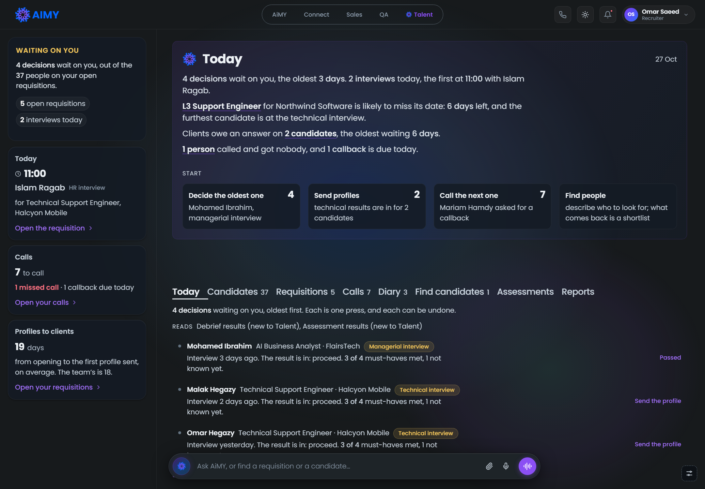
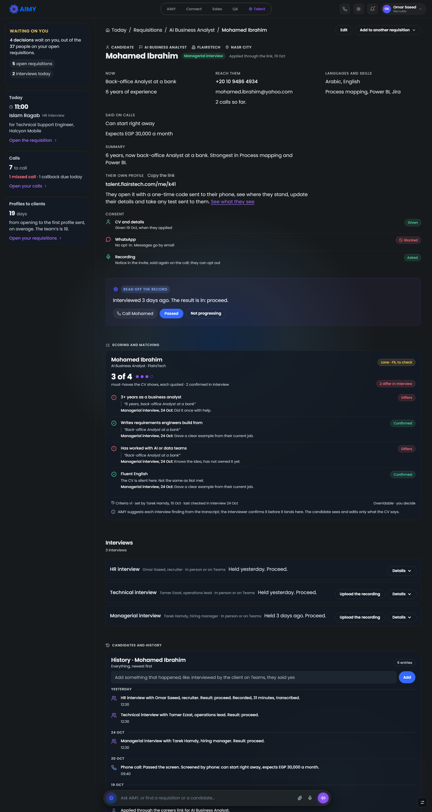
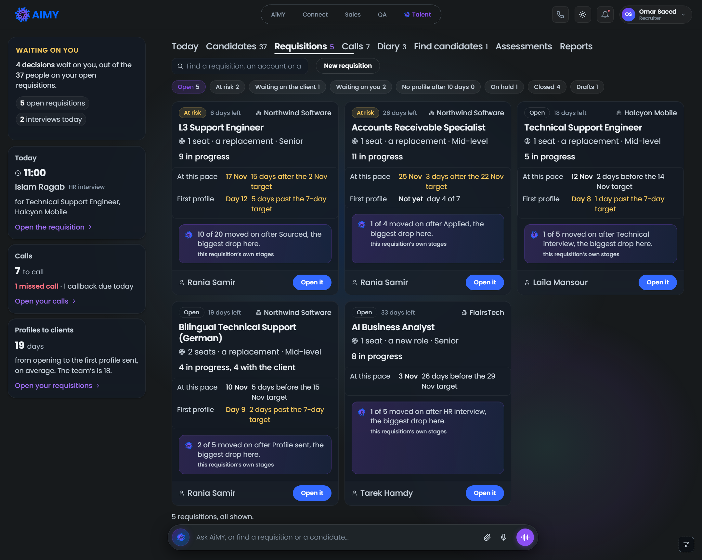
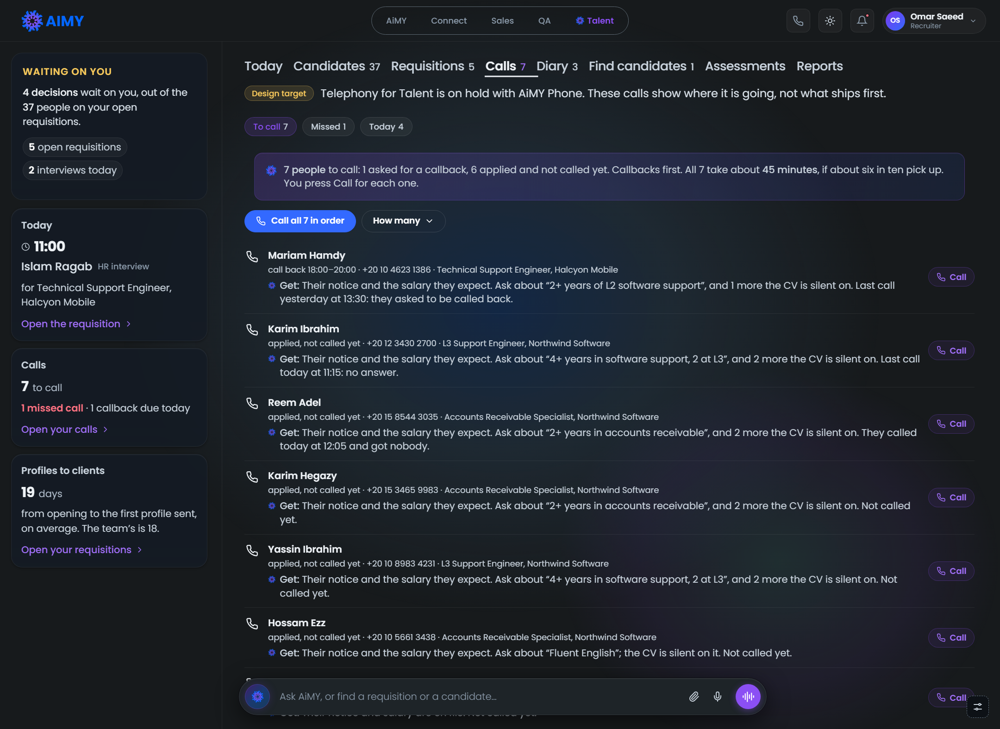
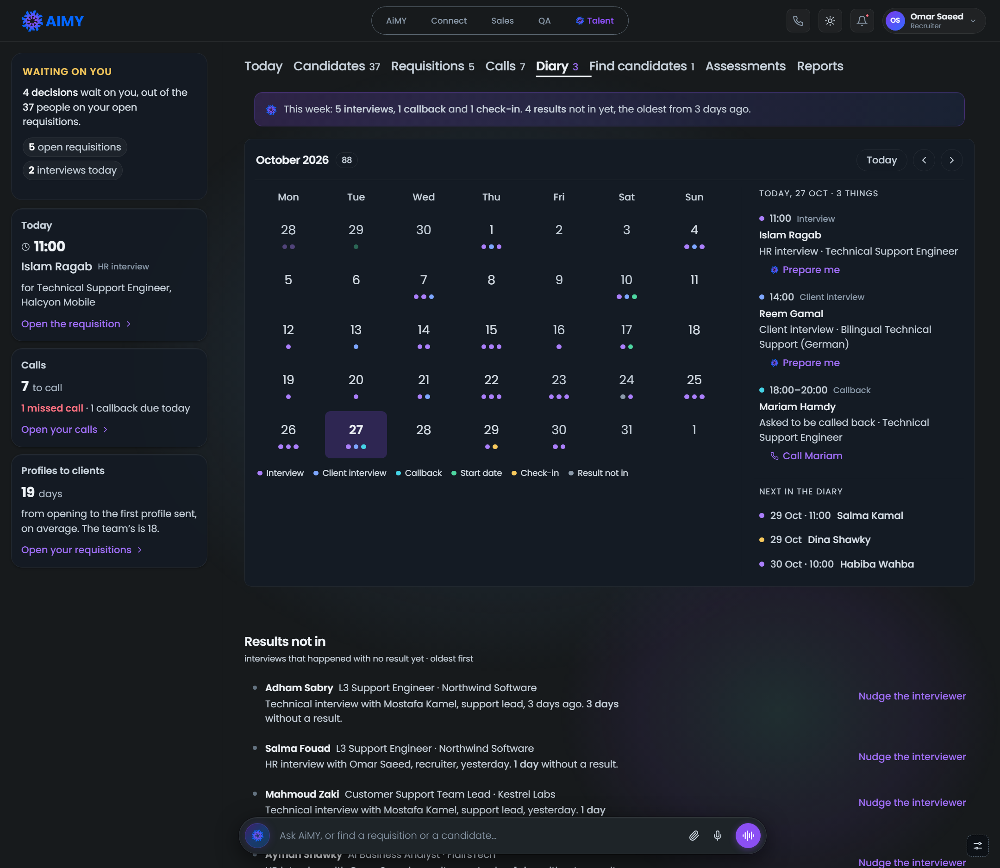
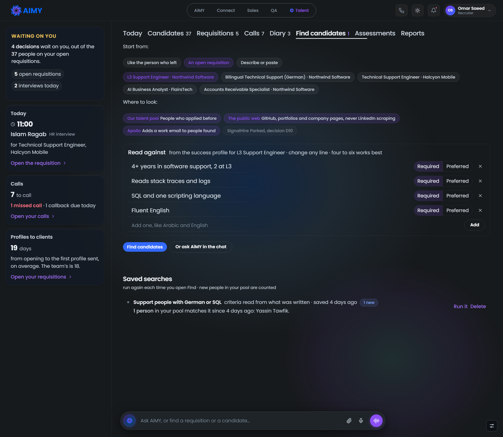
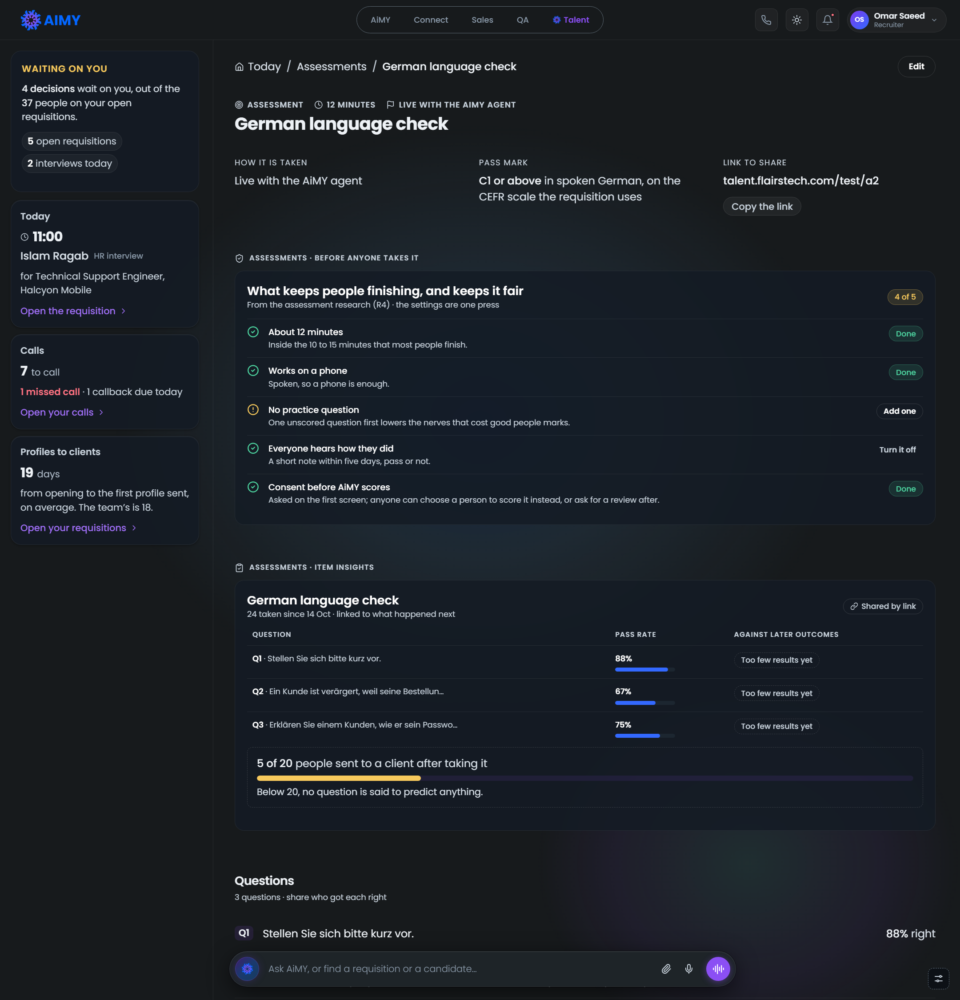
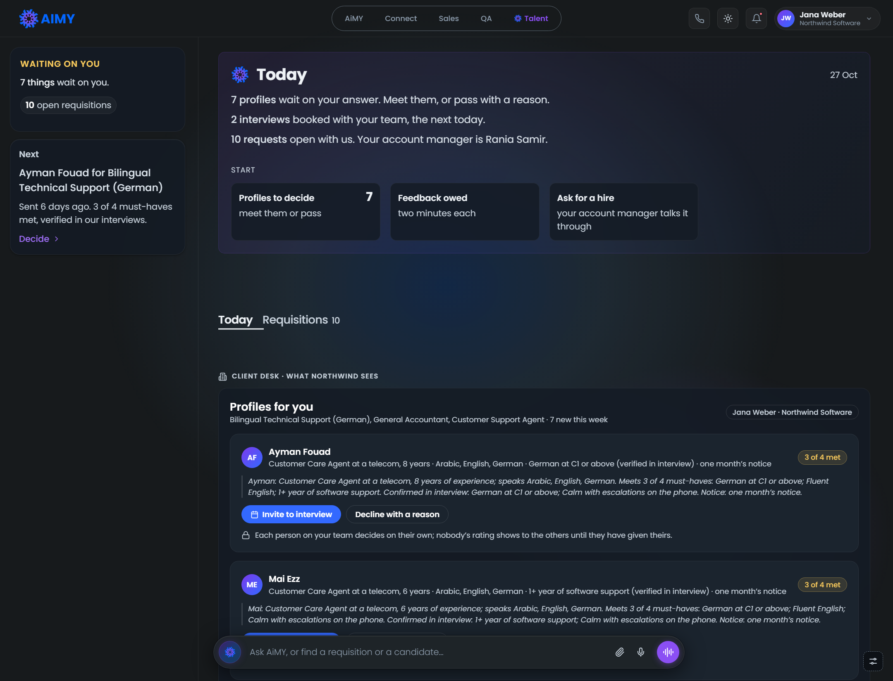
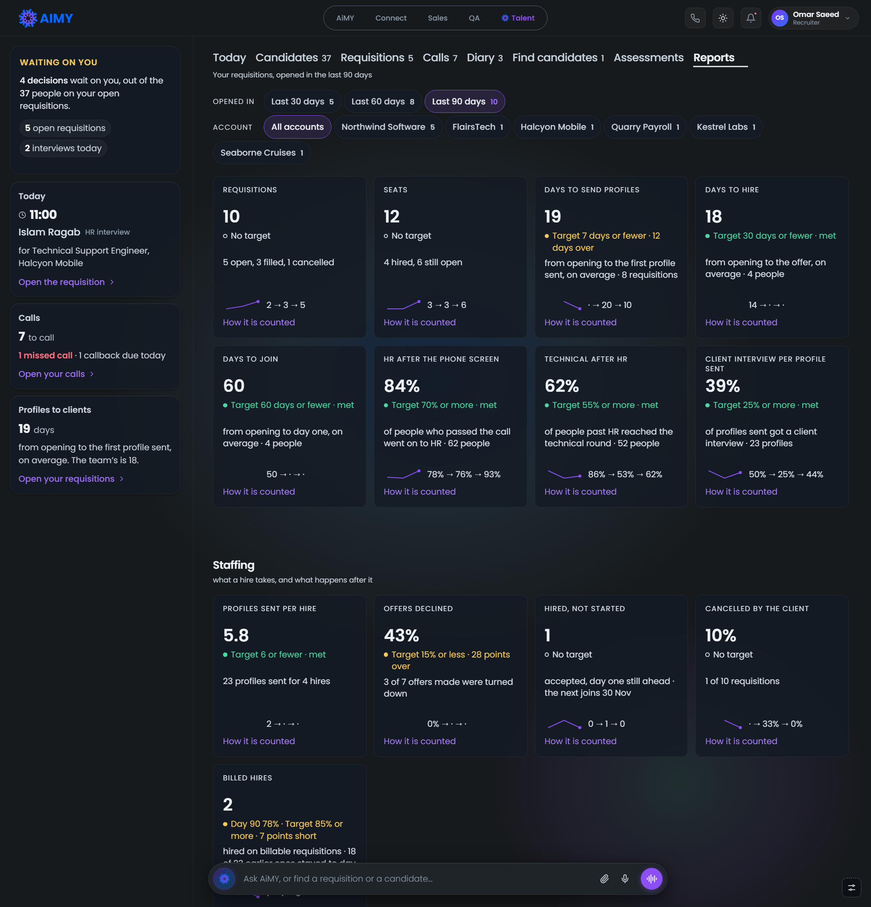
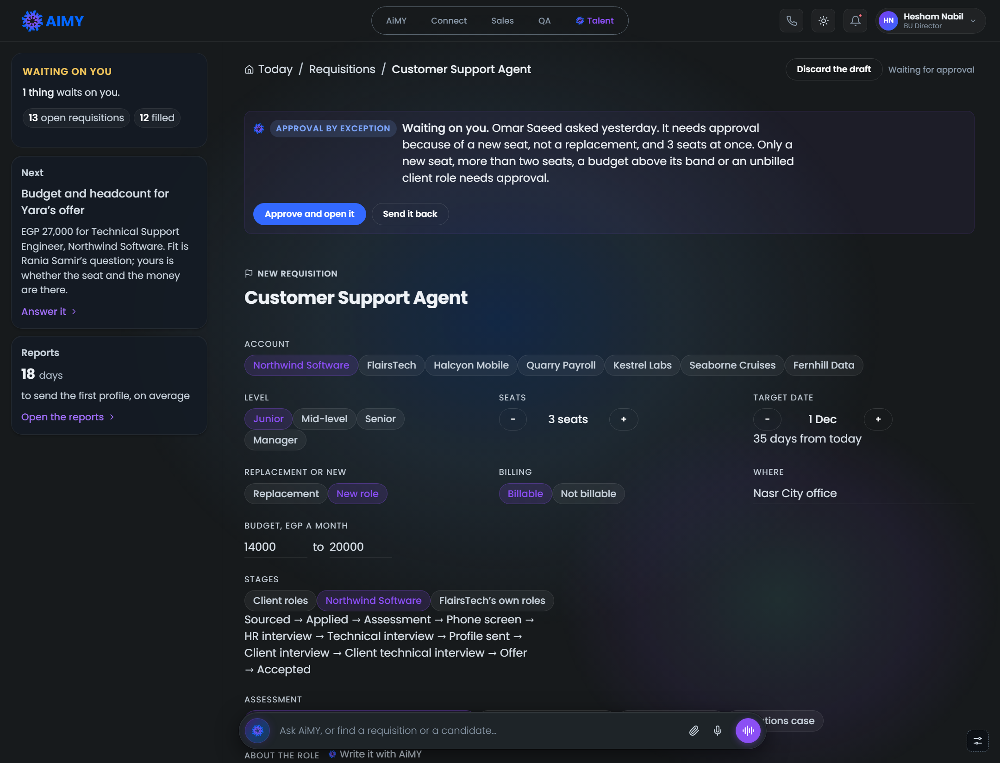

Closing the hiring loop, from a client’s request to a person still employed at day 90: what the market does, where nobody does it yet, and how the AiMY Talent prototype answers it.
The market has solved most single steps: search, AI screening, AI interviews, notetakers and client portals. Nobody joins them into one loop that learns. No vendor we found links an assessment question, an interview finding or a client’s rejection to later outcomes, keeps a verified skills profile across interviews, or measures quality of hire as standard. FlairsTech owns the whole funnel, from sourcing to the client’s decision to day 90, so AiMY Talent can close those loops where tools that own one step cannot.
Prepared 27 October 2026 for the AiMY Talent team, FlairsTech. Built from the AiMY Talent knowledge vault (research hubs R1–R8, Closing the loop, the decision notes), the recruitment dashboard (Power BI, Aug–Sep 2026), the AiMY Talent research summary and the working prototype (repository design-aimy-talent, branch engy/aimy-talent, pull request #2). Vendor figures are marked as such. This is product research, not legal advice. Every person and figure inside the prototype is invented.
From the stakeholder’s Power BI dashboard: 39 requests, 45 vacancies, 6 recruiters. Each percentage is the share of the stage before.
| Segment | Size (2025) | Note |
|---|---|---|
| Recruitment software and ATS | about $2.5–3.1B | Definitions vary 5–10× between sources |
| Narrow “AI recruiting software” | about $0.6–0.7B | Fast growing, small base |
| RPO (recruitment process outsourcing) | about $8–11B | The right price reference: about $3–10k per hire; agencies charge 15–25% of salary |
| Segment | Products researched | What it means for AiMY Talent |
|---|---|---|
| Corporate and AI-native ATS | Ashby, Greenhouse, Lever, Workable, SmartRecruiters, Teamtailor, Workday | Patterns for stages and structured interviews; no client party |
| Staffing and agency ATS | Bullhorn, Recruit CRM, Loxo, Vincere, JobAdder, Manatal, Zoho Recruit, Crelate | Closest model to FlairsTech: client, job order, sendout, placement |
| AI sourcing and matching | LinkedIn Recruiter, hireEZ, SeekOut, Juicebox, Gem, Findem, Eightfold, Beamery | Crowded and well funded: do not compete on sourcing |
| Contact data | Apollo, SignalHire | Enrichment only; consent and accuracy risk |
| Assessments and AI interviewers | HackerRank, Codility, TestGorilla, Vervoe, HireVue, Sapia.ai, Paradox, micro1, Mercor | Language gap; no outcome-linked item insights |
| Interview intelligence | Metaview, BrightHire, Pillar, Screenloop, Spark Hire, Interviewer.AI | No cumulative skills profile |
| People analytics · MENA job boards | LinkedIn Talent Insights, Visier · Wuzzuf, Bayt, Forasna | Number plus narrative · credibility channels; no public APIs |
Incumbents bought agents: Workday bought Paradox and HiredScore, SAP bought SmartRecruiters, LinkedIn shipped Hiring Assistant, Bullhorn launched Amplify, Zoom bought BrightHire. AI interviewers are bought, not built. Pricing is still per seat; outcome pricing is rare (closest: Humanly, “pay per qualified candidate”).
Candidates find jobs on boards, but hiring happens on WhatsApp, Facebook groups and referrals. Boards sell time-based access through account managers, with no public APIs. No vendor publishes Egypt coverage for sourcing data; no MENA recruiting benchmarks were found.
| Step | What the market does | Nobody does | Move for AiMY Talent · built in the prototype |
|---|---|---|---|
| Request | Per-job stages mapped to fixed stage groups so reports roll up (Ashby, Workable, Teamtailor, Lever) | Requests owned by a client account with its own stage template | Client account on top; a stage template per account, mapped to one funnel · built |
| Source | Plain words or a JD in, AI-drafted criteria the recruiter edits; pool rediscovery (Gem) | Egypt/MENA coverage is unpublished; contact data is weak | Pool first, web second, one list; web results are prospects · built |
| Match | Per-criterion verdicts with links to evidence (Juicebox, SeekOut, Ashby, LinkedIn) | Designs that make the recruiter actually check the evidence | Meets / partly / not known per criterion; “3 of 4 met”; unknowns become questions · built |
| Assess | AI interviewers with per-answer scores and overrides; item stats (HackerRank) | Linking a question to later outcomes; AI-scored speaking tests in German or Arabic | Item insights tied to the funnel; a spoken German check with a CEFR level · built |
| Interview | Notetakers fill facts and leave verdicts blank; feedback hidden until submitted | Live coverage against the template; phone and upload capture is rare | Prepare me before; gap questions; phone and upload capture · built |
| Verify | Evidence per skill inside one interview (Screenloop, Metaview) | A cumulative verified skills profile | “CV says” beside “interview found” at the core of the record · built |
| Send to client | Sendout records, client portals, scorecards hidden until each reviewer submits, AI write-ups | Fixed client rejection reason codes feeding matching | Sendout as a record; a client desk; reason codes; the recruiter approves every write-up · built |
| Offer and join | Offer flows in corporate ATSs | Tracking acceptance to joining as its own stage (54 days here) | Parallel approval; accepted → joined as stages; declined offers with reasons · built |
| Day 90 | Only 20% of US organisations measured quality of hire in 2025 | Outcomes fed back into sourcing and matching | 30/90-day check-ins; learning proposals with a minimum sample of 20 · built |
| See it all | Numbers with a narrative (Visier); reporting is the top complaint for most ATSs | Anomaly alerts with a suggested action | A metric dictionary; one sentence plus one action · built |
Everyone maps per-job stages to fixed stage groups so reports roll up. AI screening is either a verdict per criterion with evidence (Ashby, Teamtailor) or a rank with a rationale (Workable, Lever). Humans decide; Greenhouse never auto-rejects. Reporting is the most common complaint.
The client is a first-class object; the sendout is its own record. Client portals converged on a share link, limited stages, field hiding and rating. None of 8 products records client rejection reason codes. Benchmarks are weak.
Leaders start from plain words or a JD and let the recruiter edit AI-drafted criteria. The best explainable pattern is per-criterion verdicts with evidence; opaque scores are a legal target (Kistler v. Eightfold, Jan 2026). People follow AI rankings even when wrong. Pool rediscovery is standard; contact data is the weak spot.
Every serious vendor ships an AI interviewer; the good ones score per answer with a reason and allow override. No vendor links a question to later outcomes. No AI-scored speaking test for German or Arabic. Structured interviews rank first for validity (Sackett et al., 2022).
Notetakers are standard; the best split facts from judgement and leave the verdict blank (Metaview, Greenhouse). Coverage checks exist only after the fact; phone and upload capture is rare. No product keeps a cumulative verified skills profile.
Metrics agree only with a fixed unit, start and stop event: a metric dictionary comes first. Quality of hire is rarely measured. Number plus narrative leads. Rank incentives cut productivity 14% in a field experiment: do not rank recruiters.
Software is $2.5–3.1B; RPO at $8–11B is the better price reference. Incumbents bought agents in 2025. Outcome pricing is rare; “pay per qualified candidate” is the closest precedent. In Egypt, hiring happens on WhatsApp and referrals.
Egypt’s Law 151/2020 grace period ends around 1 Nov 2026: licence, DPO, cross-border permit. EU AI Act: recruitment AI is high-risk (Annex III deadline 2 Dec 2027); emotion inference banned since Feb 2025. Cold outreach is the highest-risk feature: no WhatsApp without opt-in, no LinkedIn scraping (CNIL fined Kaspr €240k).
| Feature | Risk | What the design must do | In the prototype |
|---|---|---|---|
| Web and data-provider sourcing | High | Store as a prospect with source and date; minimal fields; notice at first contact; honour objection; no LinkedIn scraping | Prospects with page and date; first contact needs approval; Wrong data?; delete on request |
| WhatsApp outreach | High | Only after an opt-in to the named business; approved template; opt-out in every message | WhatsApp only where opted in, else email; HR templates |
| Match score and explanation | High | Plain explanation with the data used; no protected traits or proxies | Evidence counts, each quoted; no percentage |
| AI screening into lanes | High | Lanes are suggestions; a recruiter confirms each move | Every move is one press by a person, with Undo |
| Automated or batch rejection | Med-high | No solely automated rejection; a person reviews each batch item | A reason picked by a person; answers sent by a person under an approved template |
| AI interview agent and scoring | Med-high | Tell candidates they talk to AI; no emotion, tone or facial inference; score content only | Consent screen before scoring; a person scores on request; integrity said apart |
| Recording and transcription | Medium | Notice before, announcement at start, consent capture, a no-recording option | Consent shown per candidate; recording can be stopped on the call |
| Candidate self-service profile | Medium | One-time code login; delete or export on request | One-time code; delete at their request, and it stays deleted |
The prototype is one product on the AiMY Sales shell and components, so it looks and behaves like the rest of the AiMY family. It runs in the browser on sample data (invented people); integrations such as telephony, email and the HR system are fixtures. Repository design-aimy-talent, branch engy/aimy-talent, pull request #2.
| Desk | What they do |
|---|---|
| Recruiter · Omar | Today, Candidates, Requisitions, Calls, Diary, Find candidates, Assessments, Reports |
| Hiring manager · Rania | Debriefs, offer approval (fit and salary), client requests as drafts, the Diary of their interviews |
| HR Manager · Dina | Every requisition, reassigning with AiMY’s pick, stage and interview templates, learning proposals, requisition approvals for unbilled roles |
| BU Director · Hesham | Budget and headcount: offers, and requisitions that are exceptions |
| Client · Jana (Northwind) | Profiles sent to them: meet them or pass with a reason; interview feedback; never salary or internal notes |
| Outside links | Careers page and apply, a candidate’s own profile (one-time code), an assessment, an interviewer’s debrief, an offer approval |

Today, the recruiter’s front page: a briefing (decisions, interviews, at-risk requisitions, callbacks), four ways to start, and the decisions waiting, oldest first.
| Where | What it does | Why (research) |
|---|---|---|
| Today | A briefing, not a list: decisions waiting (one press, Undo); three per block with the rest one press away; what waiting on others costs in days past the usual time; one move on an at-risk requisition (find more people, or ask to move the date); Prepare me before each interview; the decline message shown before it is sent, with its own Send. | R6 number plus narrative; R5: feedback delay is where days are lost (46 of 105); R4/R5 structured interviews |
| Candidates | Score as a count with one dot per must-have (full purple met, dashed not); unknown not missing; CV says beside interview found on one card; a reason on Not progressing; Returning badge with what stopped them last time; search and one-requisition filter; cards or a list; the card opens the profile. | R3 explainable matching, automation bias; R5 verified skills profile; R2 reason codes; R3 rediscovery |
| Requisitions | A forecast on each card (likely fill date vs target; first profile vs a 7-day target); start from Replace someone who left or from a briefing; approval only by exception (new seat, over the band, 3+ seats, unbilled); each client’s own stage template. | 82% replacements; R1 job-kickoff agents; R1 conditional approvals (Ashby, Lever); D7 |
| Calls | What to get on each row; a brief before and a read-back after, in the conversation; the recruiter places every call (no auto-dial); callback windows; a message after No answer (WhatsApp only with opt-in); the run’s size; AiMY coaches one habit per run. | R5 AI fills facts, people decide; R8 opt-in; parity with AiMY Sales |
| Diary | A month grid with the day’s agenda: interviews with Prepare me, callbacks in their windows, start dates, day-30/90 check-ins. Results not in: every interview with no result, oldest first, with a nudge. | AiMY Sales B11; R5 feedback speed |
| Find candidates | Start from Like the person who left; criteria shown first and editable, each Required or Preferred; pool first, then public web pages; each web fact with page and date and Wrong data?; prospects need approval; saved searches count new pool matches. | R3 editable criteria, pool rediscovery; R8 source and date, no scraping |
| Assessments | A checklist (10–15 minutes, works on a phone, practice question, a note to everyone); integrity flags said apart from the score; spoken German as a CEFR level; consent before AiMY scores, a person on request; item insights tied to later outcomes, gated below a sample. | R4 length, fairness, language gap, item insights; R8 EU AI Act |
| Client desk | Profiles sent with a recruiter-approved write-up; meet or pass with one reason code; reasons counted per client; AiMY proposes a success-profile change; the HR Manager approves. | R2: no tool records reason codes; R6 learning with a minimum sample |
| Offers, day 90 | One packet approved in parallel by the hiring manager (fit, salary) and the BU Director (budget, headcount); accepted → joined; day-30 and day-90 check-ins. | Joining is the finish line (54 days); R6 quality of hire |
| Reports | Period and account filters; every measure a card with its definition (hover, pin), a target and a month-by-month trend; staffing measures (profiles per hire, declined offers, hired not started, billed hires with day-90 retention); where time goes; team views only. | R6 metric dictionary; no ranking (−14% in a field experiment) |

A candidate’s profile: each must-have with what the CV says, what the interview found, and one status (Confirmed, Differs, Not known). The count and the dots say “3 of 4” at a glance.

Requisitions: each card’s forecast against its target, and days to the first profile.

Calls: who to call in order, and what to get from each call.

Diary: the month, today’s agenda with Prepare me and Call, and Results not in below.

Find candidates: where to start, where to look, and the criteria, each Required or Preferred.

An assessment: the German check with its CEFR pass mark and the checklist.

The client desk: profiles sent to Northwind, meet or pass with a reason.

Reports: every measure a card of one size, with its target and trend.

Approval by exception: the BU Director sees why this requisition needs him, and approves or sends it back.
Follow one role through the product: a bilingual German support agent for Northwind Software, a client.
| # | Decision | Research leaning |
|---|---|---|
| D1 | Is the client account the top record? | Yes: every staffing ATS treats the client as first-class |
| D2 | Match score or evidence counts? | Evidence counts (“4 of 5 must-haves met”); opaque scores are a legal target |
| D3 | “No forms” or “no form as the only way”? | Change it: every agent ships with editing alongside |
| D4 | Is the client a Talent user? | Yes, with a desk that shows nothing internal |
| D5 | Rank individual recruiters? | No: team views in Talent; individual views in AiMY QA |
| D6 | When do assessments and recordings come? | Test first; layered consent for recordings is the vendor norm |
| D7 | What does the BU Director approve? | Headcount and budget, possibly at the requisition stage |
| D8 | Batch decline under a policy? | Only after legal review; a person reviews each one until then |
| D10 | LinkedIn and SignalHire in search? | Keep both parked; Apollo for enrichment only after a contract check |
| D11 | Which “hired” (21 or 13)? | Fix unit, start and stop per metric before showing any number |
| D12 | Pricing unit | Per qualified candidate; the billable event is a person’s act |
| We believe | How we test it | It decides |
|---|---|---|
| We know why clients decline | Code the client feedback on the last 50 profiles sent | The reason list, and what matching must learn |
| Recruiters start the day from exceptions | Shadow 5 recruiters for a day; count actions by type | How much of Today is briefing versus records |
| A test before the call saves time | One support role for 2 weeks; compare recruiter hours and drop-off | Whether assessments are Now or Later |
| Hiring managers will answer in Talent | Think-aloud with 5, starting with the one who holds 20 requests | Where asks reach them |
| Clients will give feedback in AiMY | Ask 2 account managers how clients send feedback today | The client desk’s channel |
Is this live? Can recruiters use it tomorrow?
No. It is a working prototype in the browser on sample data with invented people. Telephony, email, WhatsApp and the HR system are fixtures; telephony for Talent is on hold with AiMY Phone. It shows how the product works and lets us test with real recruiters before engineering builds it.
Why not a match percentage, like other tools?
Opaque scores are a legal target (Kistler v. Eightfold, January 2026), and people follow an AI pick about nine times in ten even when it is wrong. A count with the evidence quoted (“3 of 4 must-haves”) is its own explanation and invites a check.
What does AiMY decide on its own?
Nothing about a person. It drafts (a requisition, a write-up, a message), reads back calls, nudges, and proposes changes. A person presses every move, with Undo, and an HR Manager approves anything AiMY wants to learn.
How is this different from Bullhorn or other staffing tools?
They track the steps. We close the loop: a reason on every client decision that teaches matching, a skills record that interviews verify over time, test questions tied to who clients accept, and day-90 retention fed back. And we hire in Arabic and German, where no vendor scores spoken language.
Why don’t we rank recruiters?
A field experiment found rank incentives cut productivity by 14%. Talent shows team and request views; coaching one person at a time lives in AiMY QA.
The client acceptance is only 30%. Isn’t that the problem?
No. 3.4 profiles per client interview is inside the usual 3 to 5, and clients hired 21 of the 24 they met. The losses are upstream (268 screened, 81 sent) and in time (14 days to the first profile). The benchmark is weak, so we test it by coding the last 50 profiles’ feedback.
Will we use LinkedIn or WhatsApp?
No LinkedIn scraping, and SignalHire stays parked. Apollo only adds a work email, after a contract check. WhatsApp only after a candidate opts in to FlairsTech; otherwise email.
What about the law?
Egypt’s data protection grace period ends around 1 November 2026: a licence, a DPO and a transfer permit are needed now, which is for legal. The EU AI Act treats recruitment AI as high-risk from December 2027; the design already keeps a person in every decision, asks consent before AI scoring and recording, and never reads emotion from a face or a voice.
How will we price it?
Compare it to recruiting services, not software: RPO is about $3–10k per hire and agencies take 15–25% of salary. The research leans to pricing per qualified candidate, where the billable event is a person’s act.
Why are 21 and 13 both “hired”?
Two units under one label: 21 people with an accepted offer, 13 vacancies filled. Every number in Talent carries one definition, its unit, start and stop, before it is shown.
What do you need from us?
Take Egypt’s law to legal this week; a yes, a no or an owner for each open decision; and agreement to run the five tests, starting with the last 50 profiles’ client feedback.